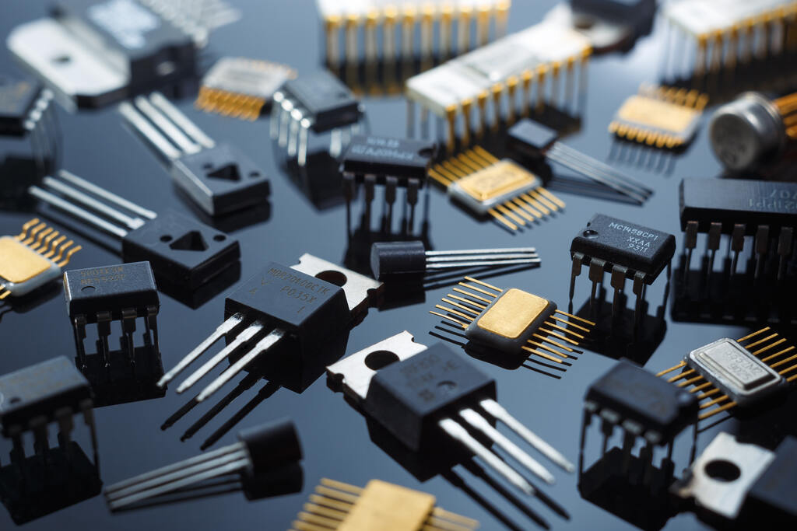

A Fascinante Evolução dos Computadores
A história da computação é uma das jornadas mais incríveis da engenharia humana. O que começou como gigantescas máquinas de calcular militares evoluiu para dispositivos de bolso milhões de vezes mais potentes.
Primeira Geração (1940-1956): Válvulas a Vácuo
Os primeiros computadores utilizavam válvulas a vácuo para os circuitos e tambores magnéticos para a memória. Eles eram imensos, muitas vezes ocupando salas inteiras. O ENIAC (Electronic Numerical Integrator and Computer) é o exemplo mais famoso. Eles geravam muito calor, consumiam uma quantidade absurda de energia e eram programados em linguagem de máquina (códigos binários), o que tornava a operação extremamente complexa.

Segunda Geração (1956-1963): Transistores
O mundo mudou com a invenção do transistor no Bell Labs. O transistor substituiu a válvula a vácuo, permitindo que os computadores se tornassem significativamente menores, mais rápidos, mais baratos, mais eficientes em termos de energia e mais confiáveis. Linguagens de programação de alto nível, como COBOL e FORTRAN, começaram a surgir nesta época.

Terceira Geração (1964-1971): Circuitos Integrados
O desenvolvimento do circuito integrado foi a marca registrada da terceira geração de computadores. Os transistores foram miniaturizados e colocados em chips de silício (semicondutores), o que aumentou drasticamente a velocidade e a eficiência. Em vez de cartões perfurados e impressões, os usuários interagiam com esses computadores através de teclados e monitores, integrados a um sistema operacional.
Quarta Geração (1971-Presente): Microprocessadores
O microprocessador trouxe a quarta geração da computação, pois milhares de circuitos integrados foram construídos em um único chip de silício. O que antes ocupava uma sala inteira agora cabia na palma da mão. O chip Intel 4004, desenvolvido em 1971, localizou todos os componentes do computador (CPU, memória, controles de entrada/saída) em um único chip. Isso levou ao surgimento dos computadores pessoais (PCs).
Quinta Geração e Além: Inteligência Artificial
A atual revolução tecnológica baseia-se na computação quântica e na inteligência artificial (IA). A capacidade das máquinas de aprender com grandes volumes de dados (Machine Learning e Deep Learning) está transformando indústrias, desde diagnósticos médicos até carros autônomos. A computação deixou de ser apenas processamento de dados para se tornar raciocínio preditivo.
Voltar ao topoGaleria de Fotos da Evolução
Referências
O conteúdo educacional desta página foi fundamentado nas informações públicas disponibilizadas pelo Computer History Museum e publicações do IEEE (Institute of Electrical and Electronics Engineers).